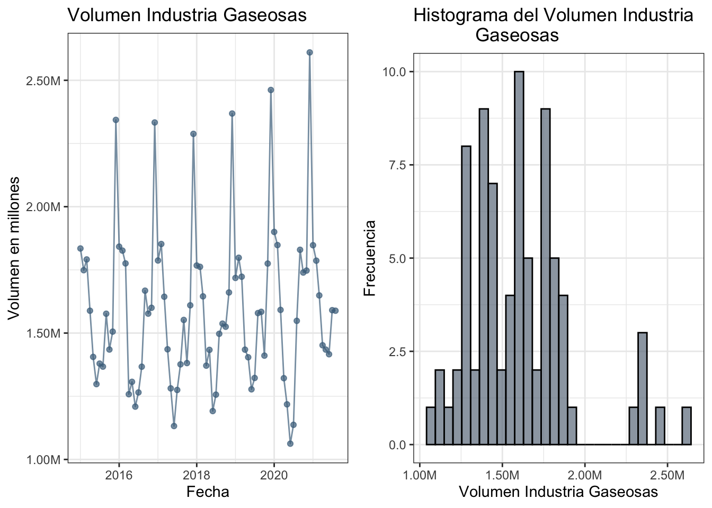
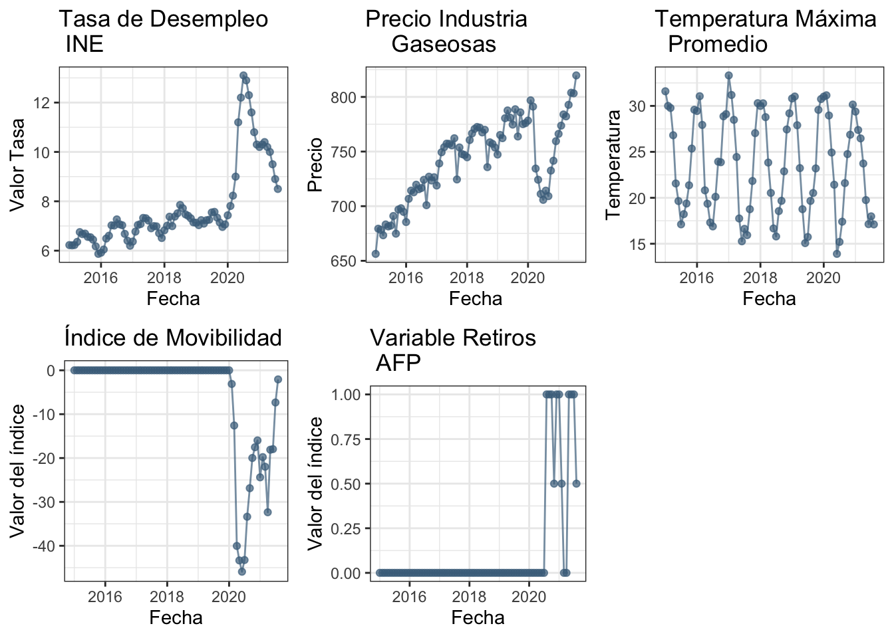
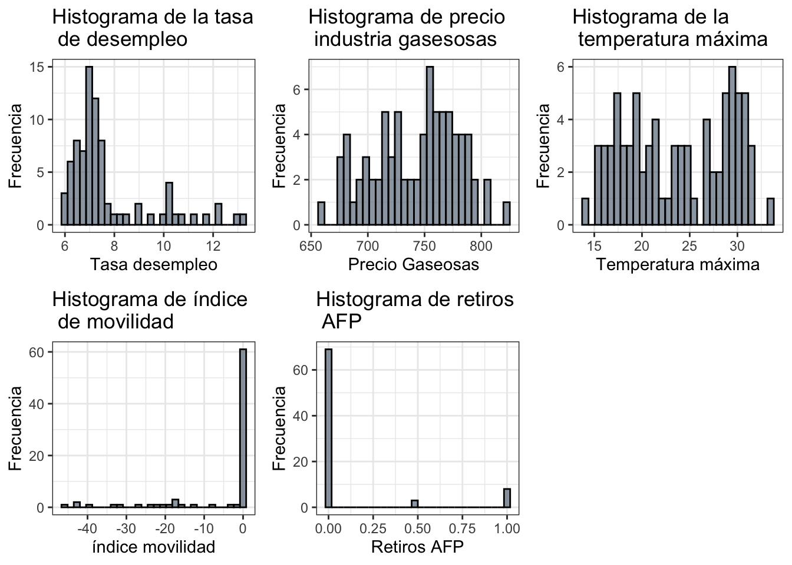
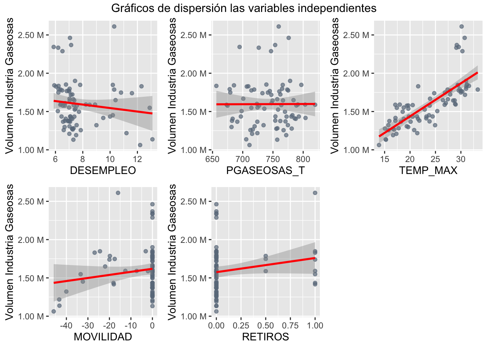
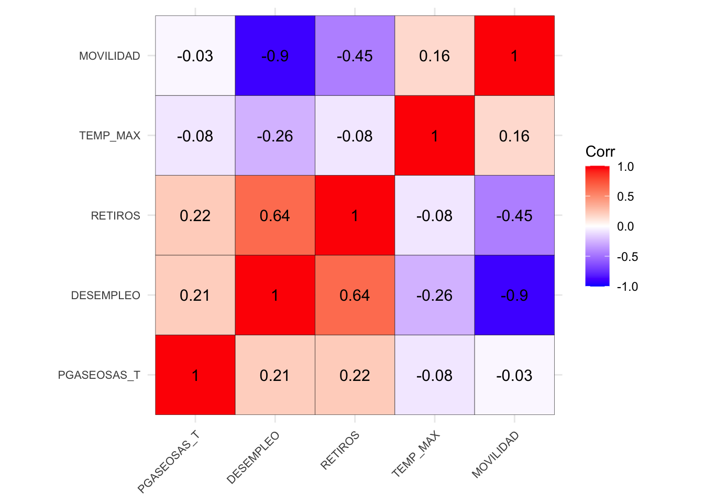
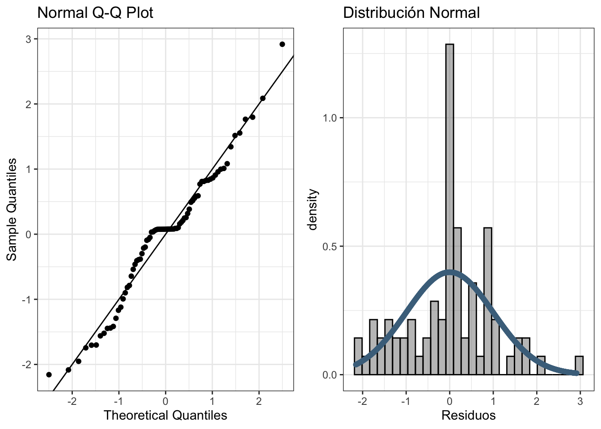
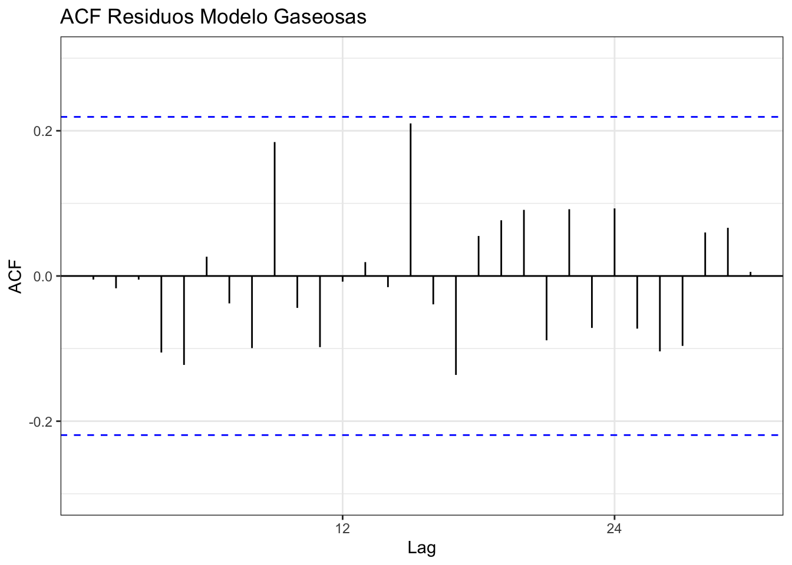
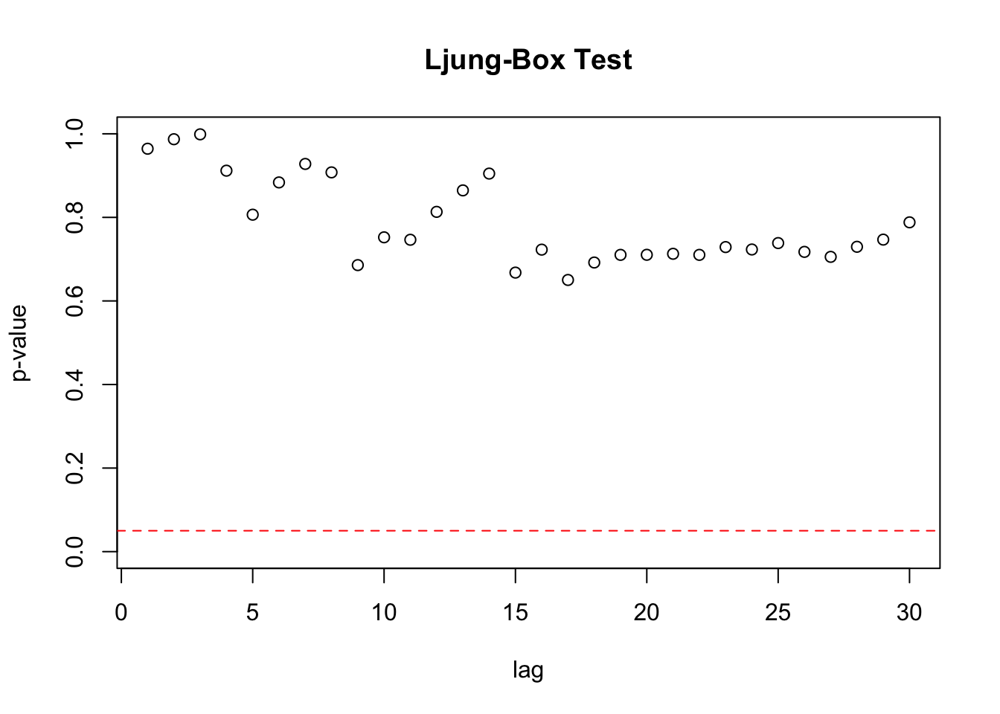
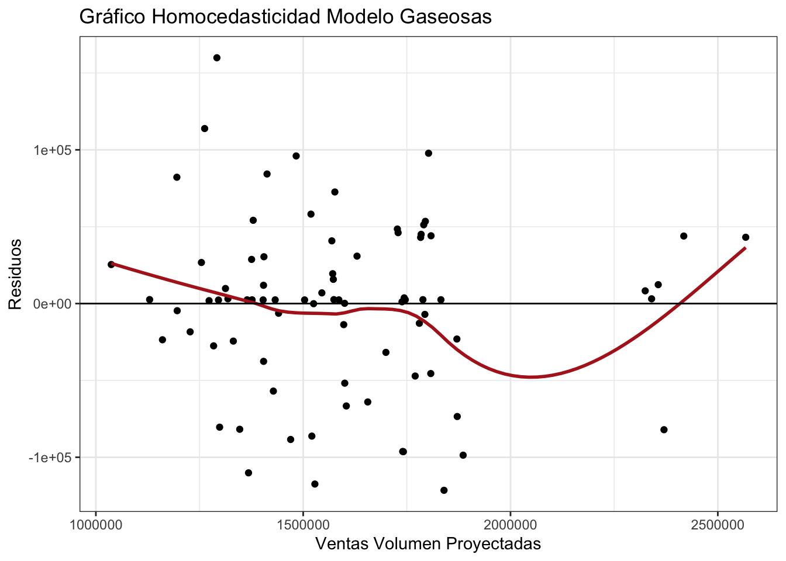

Chapter 2 2. Modelo Gaseosas
Importar los datos, dependiendo la ubicación que se encuentren en el directorio
ruta = "/Users/mivicuna/Desktop/Proyecto CCU/Información CCU/Gaseosas 15-09-2021/Data Frame Gaseosas Interna.xlsx"
datosgas = read_excel(ruta,col_types = c("date", "numeric","numeric",
"numeric", "numeric", "numeric", "numeric"))2.1 2.1 Análisis Descriptivo
2.1.0.1 2.1.1 Venta Volumen de Gaseosas
A continuación se grafica la variable objetivo de venta volumen de gaseosas desde Enero 2015 a Agosto 2021.
plot1.1 = ggplot(datosgas,aes(x = PERIODO, y = GASEOSAS)) +
geom_point(colour = "skyblue4", alpha = 0.7) +
geom_line(colour = "skyblue4", alpha = 0.7) +
labs(title = "Volumen Industria Gaseosas",
x = "Fecha",
y = "Volumen en millones") +
theme_bw() +
scale_y_continuous(labels = label_number(suffix = "M", scale = 1e-6)) El histograma de la venta volumen de gaseosas está dado por
plot1.2 = ggplot(data = datosgas, aes(x = GASEOSAS)) +
geom_histogram(alpha = 0.7, color="black", fill =
"slategray4") +
labs(title = "Histograma del Volumen Industria
Gaseosas",
x = "Volumen Industria Gaseosas",
y = "Frecuencia") +
scale_x_continuous(labels = label_number(suffix = "M", scale = 1e-6)) +
theme_bw()
Las medidas descriptivas de la venta volumen de gaseosas se calculan mediante
2.1.0.2 2.2.2 Variables Independientes
Los gráficos de tendencia para cada una de las dimesiones predictoras del modelo
#====== Desempleo ======#
plot2.1 = ggplot(datosgas,aes(x = PERIODO)) +
geom_point(aes(y = DESEMPLEO), alpha = 0.7, colour = "skyblue4") +
geom_line(aes(y = DESEMPLEO), alpha = 0.7, colour = "skyblue4") +
labs(title = "Tasa de Desempleo \n INE",
x = "Fecha", y = "Valor Tasa") +
theme_bw()
#====== Precio Gasesosas ======#
plot2.2 = ggplot(datosgas,aes(x = PERIODO)) +
geom_point(aes(y = PGASEOSAS_T), alpha = 0.7, colour = "skyblue4") +
geom_line(aes(y = PGASEOSAS_T), alpha = 0.7, colour = "skyblue4") +
labs(title = "Precio Industria \n Gaseosas",
x = "Fecha", y = "Precio") +
theme_bw()
#====== Temperatura Máxima ======#
plot2.3 = ggplot(datosgas,aes(x = PERIODO)) +
geom_point(aes(y = TEMP_MAX), alpha = 0.7, colour = "skyblue4") +
geom_line(aes(y = TEMP_MAX), alpha = 0.7, colour = "skyblue4") +
labs(title = "Temperatura Máxima \n Promedio",
x = "Fecha",y = "Temperatura") +
theme_bw()
#====== Índice de Movilidad ======#
plot2.4 = ggplot(datosgas,aes(x = PERIODO)) +
geom_point(aes(y = MOVILIDAD), alpha = 0.7, colour = "skyblue4") +
geom_line(aes(y = MOVILIDAD), alpha = 0.7, colour = "skyblue4") +
labs(title = "Índice de Movibilidad",
x = "Fecha",
y = "Valor del índice") +
theme_bw()
#====== Retiros ======#
plot2.5 = ggplot(datosgas,aes(x = PERIODO)) +
geom_point(aes(y = RETIROS), alpha = 0.7, colour = "skyblue4") +
geom_line(aes(y = RETIROS), alpha = 0.7, colour = "skyblue4") +
labs(title = "Variable Retiros \n AFP",
x = "Fecha",
y = "Valor del índice") +
theme_bw()
ggarrange(plot2.1,plot2.2,plot2.3,plot2.4,plot2.5,ncol=3,nrow=2)
Los histogramas de distribuciones de cada dimensión predictiva
#====== Desempleo ======#
plot3.1 = ggplot(data = datosgas, aes(x = DESEMPLEO)) +
geom_histogram(alpha = 0.7, color="black", fill = "slategray4") +
labs(title = "Histograma de la tasa \n de desempleo",
x = "Tasa desempleo", y = "Frecuencia") +
theme_bw()
#====== Precio Gaseosas ======#
plot3.2 = ggplot(data = datosgas, aes(x = PGASEOSAS_T)) +
geom_histogram(alpha = 0.7, color="black", fill = "slategray4") +
labs(title = "Histograma de precio \n industria gasesosas",
x = "Precio Gaseosas", y = "Frecuencia") +
theme_bw()
#====== Temperatura Máxima ======#
plot3.3 = ggplot(data = datosgas, aes(x = TEMP_MAX)) +
geom_histogram(alpha = 0.7, color="black", fill = "slategray4") +
labs(title = "Histograma de la \n temperatura máxima",
x = "Temperatura máxima", y = "Frecuencia") +
theme_bw()
#====== Índice de Movilidad ======#
plot3.4 = ggplot(data = datosgas, aes(x = MOVILIDAD)) +
geom_histogram(alpha = 0.7, color="black", fill = "slategray4") +
labs(title = "Histograma de índice \n de movilidad ",
x = "índice movilidad",y = "Frecuencia") +
theme_bw()
#====== Retiros ======#
plot3.5 = ggplot(data = datosgas, aes(x = RETIROS)) +
geom_histogram(alpha = 0.7, color="black", fill = "slategray4") +
labs(title = "Histograma de retiros \n AFP",
x = "Retiros AFP", y = "Frecuencia") +
theme_bw()
ggarrange(plot3.1,plot3.2,plot3.3,plot3.4,plot3.5,ncol=3,nrow=2)
2.2 2.2 Análisis Bivariado
A continuación los gráficos de dispersión de la variable objetivo con las dimensiones independientes
subset2.2 <- select(datosgas,-c(PERIODO,GASEOSAS))
Gaseosas <- datosgas$GASEOSAS
myplots <- list()
for(i in 1:ncol(subset2.2)){
col <- names(subset2.2)[i]
aux <- bind_cols(Gaseosas = Gaseosas,select(datosgas,col))
ggp <- ggplot(aux, aes_string(x = col , y = "Gaseosas")) +
geom_point(color = "slategray4",alpha=0.7) +
geom_smooth(method = "lm",col="red") +
labs(y = "Volumen Industria Gaseosas") +
scale_y_continuous(labels = label_number(suffix = " M", scale = 1e-6))
theme_bw()
myplots[[i]] <- ggp
rm(ggp,aux,col)
}plot3.3 <- ggarrange(myplots[[1]],myplots[[2]],myplots[[3]],
myplots[[4]],myplots[[5]],
nrow = 2, ncol = 3, common.legend = TRUE)
annotate_figure(plot3.3,top = text_grob("Gráficos de dispersión las variables independientes"))
Cálculo de correlaciones de la variable objetivo con las dimensiones utilizadas
tibble(Variable = row.names(cor(subset2.2, Gaseosas)),
Correlacion = as.numeric(cor(subset2.2, Gaseosas))) %>%
arrange(desc(abs(Correlacion)))## # A tibble: 5 x 2
## Variable Correlacion
## <chr> <dbl>
## 1 TEMP_MAX 0.761
## 2 RETIROS 0.185
## 3 MOVILIDAD 0.153
## 4 DESEMPLEO -0.125
## 5 PGASEOSAS_T 0.003332.2.0.1 Ajuste del Modelo CCU
Gaseosas = ts(datosgas$GASEOSAS, frequency=12, start=c(2015,1))
TYPCYD2 = ts(as.matrix(select(datosgas,-c(PERIODO,GASEOSAS))), frequency=12,
start=c(2015,1))
## Modelo Ajustado con la función auto.arima()
arimaCervezas = auto.arima(Gaseosas, xreg=TYPCYD2)Se ajusta el modelo obtenido con la función auto.arima( ) utilizando la función Arima( ) del paquete forecast de R,
## Ajustar el modelo obtenido con autoarima con la función Arima
model_auto_arima_gas = Arima(Gaseosas,order = c(3, 0, 0),
seasonal = list(order = c(0, 1, 1),
period = 12),include.drift =TRUE,xreg = TYPCYD2 )Se evalúa la significancia de los parámetros realizando test \(H_0:\beta_i = 0\) v/s \(H_1: \beta_i \neq 0\) para \(i=1,2,3,4,5\)
2.3 2.3 Análisis Multivariado
A continuación los gráficos de heatmap de correlaciones de a pares de las dimensiones independientes
variables = colnames(subset2.2[,1:5])
corr_variables = matrix(round(cor(subset2.2[,1:5]),3),nrow=5,ncol=5, dimnames = list(variables,variables))
ggcorrplot(corr_variables, hc.order = TRUE, outline.col = "black", lab = TRUE, ) +
theme(axis.text.x = element_text(size = 8),
axis.text.y = element_text(size = 8)) 
2.4 2.4 Verificación de los supuestos
2.4.0.1 2.4.1 Normalidad
datosgas$Residuos <- residuals(model_auto_arima_gas)
# Residuos Estandarizados
datosgas$Residuos_z = (datosgas$Residuos - mean(datosgas$Residuos))/sd(datosgas$Residuos)
# ===== QQ-plot =====#
plot4.3 <- ggplot(datosgas, aes(sample = Residuos_z)) +
stat_qq() +
geom_abline(slope=1) +
labs(title = "Normal Q-Q Plot",
x = "Theoretical Quantiles",
y = "Sample Quantiles") +
theme_bw()
x = seq(min(seq(min(datosgas$Residuos_z),max(datosgas$Residuos_z),len=1000)),
max(datosgas$Residuos_z),len=1000)
gg = dnorm(x,0,1)
datosplot <- data.frame(x = x, y = gg)
plot4.4 <- ggplot(data = datosgas, aes(x = Residuos_z)) +
geom_histogram(aes(y=..density..),alpha = 0.5,
color="black", fill = "gray50") +
geom_point(data=datosplot, aes(x=x,y=y),
color="skyblue4") +
labs(title = "Distribución Normal",
x = "Residuos") +
theme_bw()
ggarrange(plot4.3,plot4.4,ncol=2)
2.4.0.2 2.4.2 Independencia
plot1 = ggAcf(datosgas$Residuos,lag=30) +
labs(title = "ACF Residuos Modelo Gaseosas") +
ylim(-0.3,0.3) +
theme_bw()
plot1
El test de Ljung-Box para testear simúltaneamente que sean incorrelacionados los errores para varios lag de tiempo
Est = c()
valorp = c()
for( i in 1:12){
Test = Box.test(datosgas$Residuos, lag = i, type = "Ljung-Box")
Est[i] = Test$statistic
valorp[i] = Test$p.value
}
tibble(Lag = seq(1,12),Estadistico = Est, valor_p = valorp)## # A tibble: 12 x 3
## Lag Estadistico valor_p
## <int> <dbl> <dbl>
## 1 1 0.00200 0.964
## 2 2 0.0261 0.987
## 3 3 0.0282 0.999
## 4 4 0.987 0.912
## 5 5 2.30 0.806
## 6 6 2.36 0.884
## 7 7 2.49 0.928
## 8 8 3.39 0.908
## 9 9 6.53 0.686
## 10 10 6.71 0.752
## 11 11 7.63 0.746
## 12 12 7.63 0.813Gráfico de los valores-p del test Ljung-Box

2.4.0.3 2.4.3 No colinealidad
Regresion_Model_Gas <- lm(GASEOSAS ~ -1 + DESEMPLEO + PGASEOSAS_T +TEMP_MAX + MOVILIDAD +RETIROS,data=datosgas )tibble(Variable = names(vif(Regresion_Model_Gas)), VIF = round(vif(Regresion_Model_Gas),3))%>%as.data.frame()## Variable VIF
## 1 DESEMPLEO 209.937
## 2 PGASEOSAS_T 210.772
## 3 TEMP_MAX 20.191
## 4 MOVILIDAD 8.554
## 5 RETIROS 2.1092.4.0.4 2.4.4 Homocedasticidad
plot1 = ggplot(data = subset2.2, aes(model_auto_arima_gas$fitted,model_auto_arima_gas$residuals)) +
geom_point() +
geom_smooth(color = "firebrick", se = FALSE) +
geom_hline(yintercept = 0) +
labs( title = "Gráfico Homocedasticidad Modelo Gaseosas ",
y = "Residuos",
x = "Ventas Volumen Proyectadas") +
theme_bw()
plot1